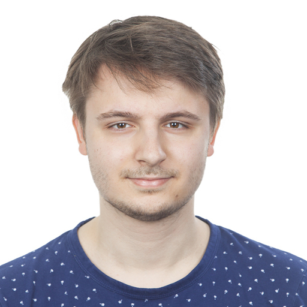

About
I'm a PhD student in Fabian Theis' lab at Helmholtz Munich, supported by the German National Scholarship Foundation. My work sits at the intersection of deep learning and genomics, where I am building models that are not only accurate but interpretable.
I'm always happy to chat about research, collaborations, or ideas. Feel free to reach out.
Research Interests
Publications
annbatch unlocks terabyte-scale training of biological data in anndata
arXiv (2026) · doi: 10.1101/2025.06.10.657924
A Predictive Atlas of Disease Onset from Retinal Fundus Photographs
Lancet Digital Health (2026) · doi: 10.1016/j.landig.2025.100962
Integration of Multimodal Single-Cell Data via Explainable Sparse Deep Generative Modelling
bioRxiv (2025) · doi: 10.1101/2025.06.10.657924
Multistate and Functional Protein Design Using RoseTTAFold Sequence Space Diffusion
Nature Biotechnology (2024) · doi: 10.1038/s41587-024-02395-w
Software